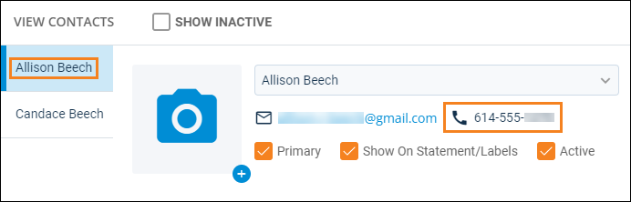
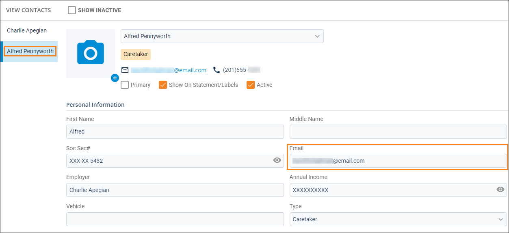
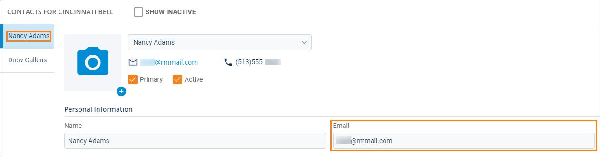

Source: https://rmxhelp.rentmanager.com/Topics/Express/KB/Script-Index-Contact.htm
Contact Indexing
In scripting, an index is how instances of an entity or other record are counted in a script. Indexing manages the one-to-many relationship that occurs between two classes.
When the Contact class is used as a child class in a script (e.g., Tenant.Contact.Function), an index can be specified to uniquely identify contacts that are associated with the preceding class. For example, tenants can be associated with multiple contacts, and indexing can be used to identify each of those contacts.
More Information
Owner accounts within Rent Manager do not have multiple contacts, so functions with the Contact child class refer to the owner's contact information on the owner's details page.
The index parameter for the Contact child class when used with the Owner parent class returns Invalid contact index on any value other than the default value of 0.
Contact Index Relationships
The Contact class may use an index parameter when it is preceded by certain classes. Each class is described below.
Contacts associated with a prospect, tenant, or vendor are organized by the primary contact first, while the remaining contacts are indexed alphabetically by last name. The contact with Primary checked in the contact's details has an index of 0, and the first additional contact has an index of 1, and so on.
Prospect.Contact Indexing
You can view a contact's index for a prospect by viewing the order in which the contacts display on the View Contacts pop-up.

[Prospect.Contact(0).PhoneNumber.FullNumber]
Using the information in the above image, this returns the full phone number (including extension, if applicable) of Allison Beech, the Primary contact of the prospect.
Tenant.Contact Indexing
You can view a contact's index for a tenant by viewing the order in which the contacts display on the View Contacts pop-up.

[Tenant.Contact(1).Email]
Using the information in the above image, this returns the email address of Alfred Pennyworth, the first additional contact of the tenant.
Vendor.Contact Indexing
You can view a contact's index for a vendor by viewing the order in which the contacts display on the View Contacts pop-up.

[Vendor.Contact(0).Email()]
Using the information in the above image, this returns the email address of Nancy Adams, the primary contact of the vendor.